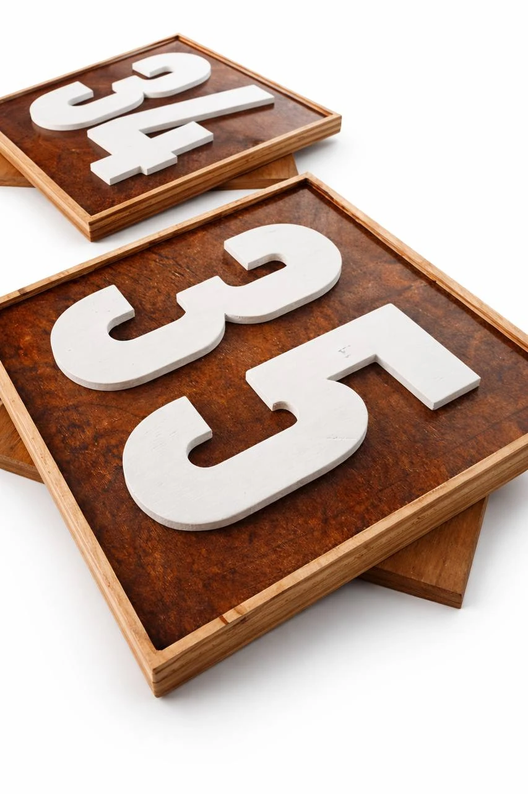
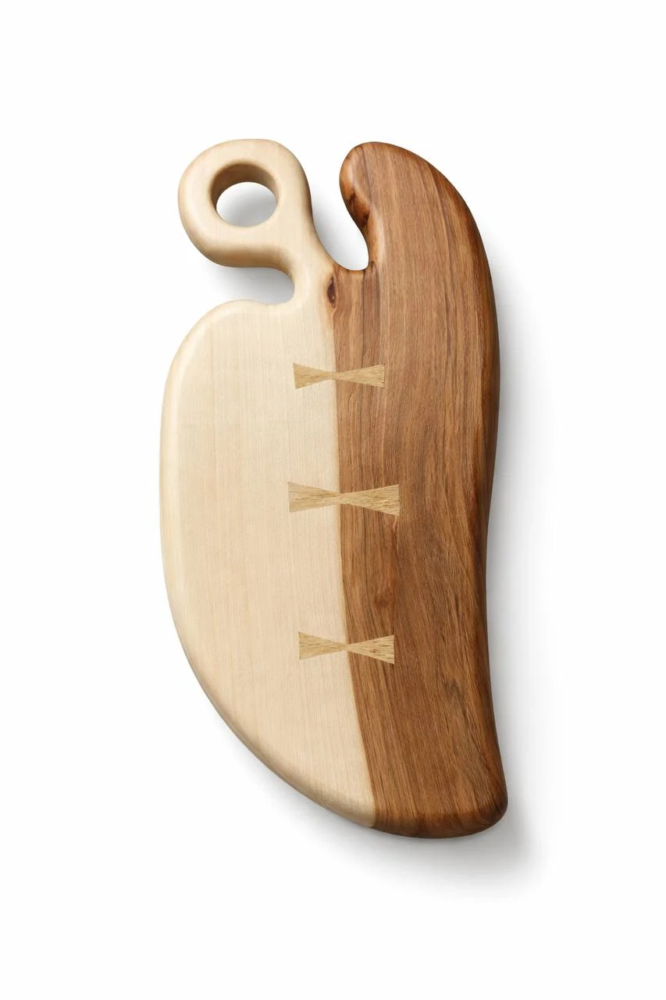
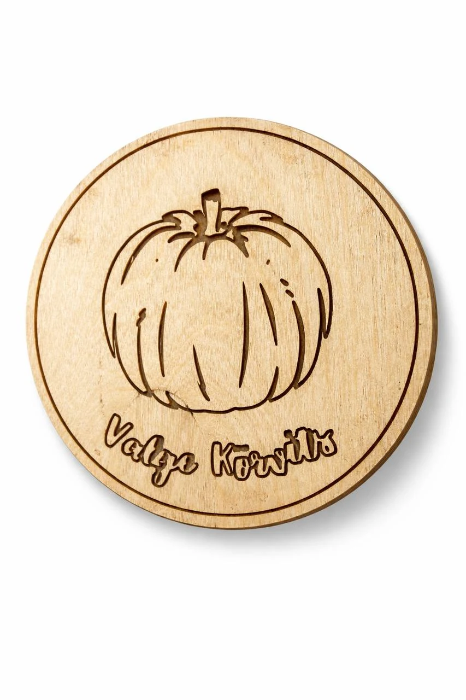
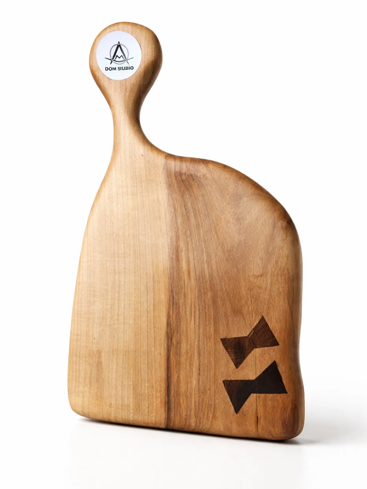
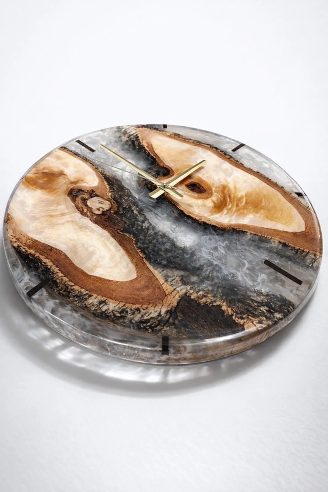
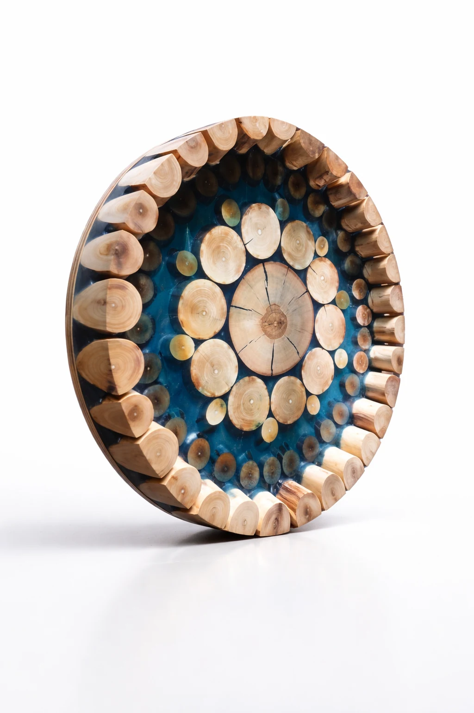
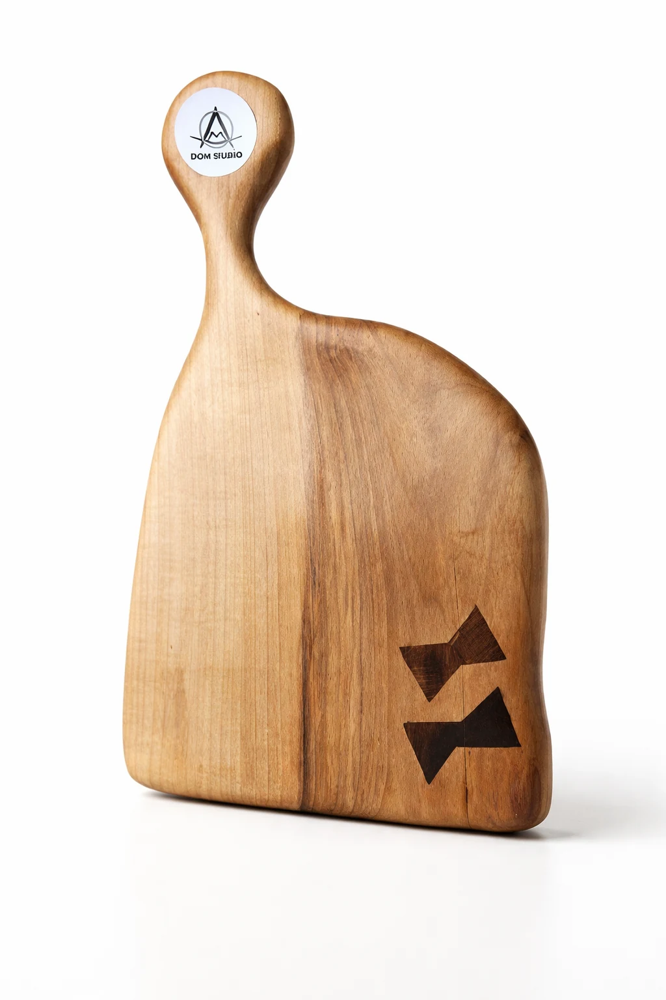
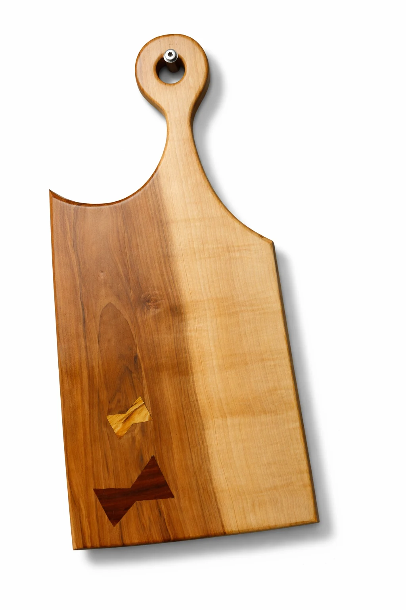

DOM STUDIO · handmade из Эстонии
Подарки из дерева, гравировка и вещи, которые хочется сохранить надолго.
Мы создаём сервировочные доски, персонализированные подарки, интерьерные детали и нестандартные изделия для дома, подарка или бренда. В основе каждой работы — материал, форма и внимание к деталям.
- Ручная работа в Эстонии
- Персонализация и гравировка
- Для частных и корпоративных заказов

О студии
Современная мастерская, где важны материал, форма и характер вещи.
DOM STUDIO — это handmade-бренд из Эстонии, в котором дерево превращается в подарки, сервировочные предметы, декоративные детали и изделия под конкретную задачу. Мы работаем не по принципу «ещё одна вещь на полке», а стараемся делать предметы, которые хочется дарить, хранить и использовать долго.
Нам близка чистая форма, спокойная подача и уважение к материалу. Поэтому сайт показывает не просто ассортимент, а настроение бренда: ручная работа, аккуратная отделка и возможность сделать изделие именно под вашего человека, дом или проект.
Направления
То, что мы делаем лучше всего.
Основа DOM STUDIO — не один тип изделия, а несколько сильных направлений, объединённых единым вкусом, ручной работой и возможностью адаптировать вещь под конкретный повод.
Персонализированные подарки
Имена, даты, символы и акценты, которые превращают предмет в личную историю, а не просто красивую вещь.
Сервировочные и разделочные доски
Чистые формы, выразительная древесная текстура и спокойная подача, которая хорошо смотрится и дома, и в подарок.
Гравировка, номера и таблички
Номера домов, таблички, гравированные детали и небольшие изделия, в которых важна точность и аккуратный вид.
Декор и интерьерные детали
От декоративных элементов до предметов с epoxy-акцентом, которые работают как визуальный центр пространства.
Нестандартные изделия и небольшая мебель
Когда нужен предмет под задачу: с особым форматом, размером, функцией или характером подачи.
Портфолио
Лучшие работы, которые хочется рассматривать вблизи.
Здесь собраны изделия, по которым быстрее всего читается стиль DOM STUDIO: чистая предметная съёмка, выразительная текстура дерева, персонализация и несколько более интерьерных работ для ощущения масштаба.


{kind=link}


{kind=link}

{kind=link}

{kind=link}


{kind=link}



{kind=link}

{kind=link}

Кастом
Если у вас есть идея, мы поможем превратить её в вещь.
Одна из сильных сторон DOM STUDIO — это возможность работать не только с готовой формой, но и с вашим сценарием. Иногда нужен подарок с именем, иногда номер дома, иногда изделие под конкретный интерьер или небольшой корпоративный тираж. Мы как раз про это.
- Имена, даты, символы, фразы и памятные элементы.
- Гравировка и персонализация, которые выглядят аккуратно, а не случайно добавленными.
- Адаптация размера, формы и подачи под конкретный повод, человека или пространство.
Для бизнеса
DOM STUDIO подходит и для фирм, которым нужен предмет с характером.
Если вам нужны корпоративные подарки, брендированные изделия, таблички, номера или небольшой тираж под компанию, сайт-визитка DOM STUDIO должен сразу показывать, что мы умеем работать и в этом формате. Без ощущения «каталога сувениров» — с тем же вниманием к подаче, что и в частных заказах.
Контакты
Давайте обсудим ваш заказ или идею.
Если вам нужен подарок, предмет для дома, табличка, номер или индивидуальное изделие, проще всего написать сразу. Самый быстрый сценарий для первого касания — Instagram, но телефон и email тоже на месте.
- Можно прийти с готовой задачей или только с ощущением того, что вы хотите получить.
- Подскажем, какой формат будет смотреться лучше и что реально реализовать красиво.
- Сайт создан как визитка, которую удобно отправить и частному клиенту, и компании.
Основной контакт
DOM STUDIO
Быстрее всего отвечаем через Instagram.
Телефон: +372 57 818 661